KHAI BÁO TỜ KHAI VẬN CHUYỂN ĐỘC LẬP - OLA
Để thực hiện khai báo tờ khai vận chuyển, bạn vào menu "Tờ khai hải quan / Đăng ký tờ khai vận chuyển (OLA)"
Màn hình tờ khai hiện ra như sau:
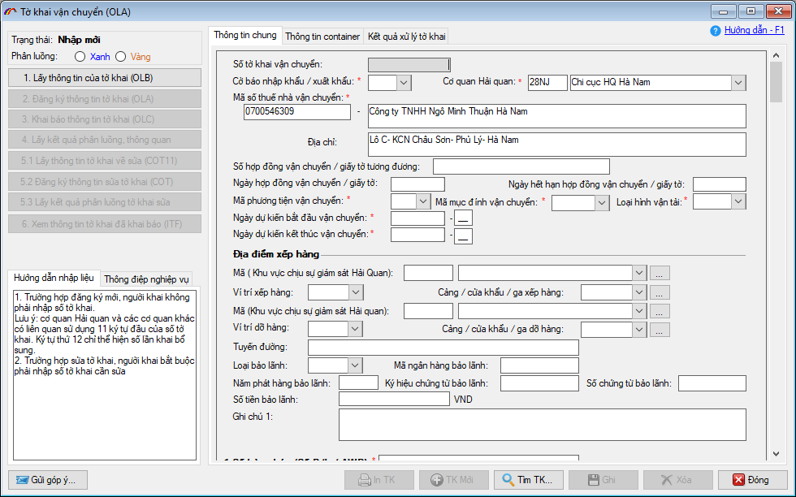
Người khai tiến hành nhập thông tin chung cho tờ khai vận chuyển tại tab "Thông tin chung". Lưu ý các tiêu chí có dấu (*) màu đỏ là bắt buộc nhập, các ô màu xám là chỉ tiêu thông tin do hệ thống tự động trả về hoặc chương trình tự tính, doanh nghiệp không cần nhập vào những chỉ tiêu này.
Trong quá trình nhập liệu, khi bạn click chuột vào tiêu chí nào, phía dưới góc trái màn hình tờ khai sẽ hiện ra "Hướng dẫn nhập liệu" chi tiết, bạn làm theo các hướng dẫn để nhập thông tin cho các chỉ tiêu cần thiết. Ví dụ khi kích chuột vào ô Cờ báo nhập khẩu / xuất khẩu:
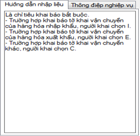
Phần 1: Nhập thông tin cho tờ khai
Nhập thông tin cơ bản cho tờ khai vận chuyển:
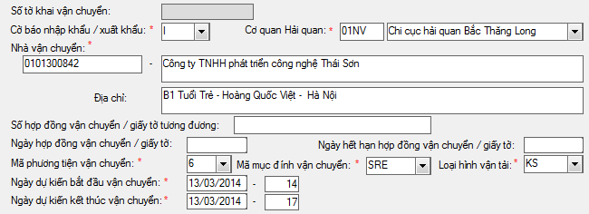
Cờ báo nhập/ xuất khẩu: Người khai chọn cờ báo cho tờ khai vận chuyển, nếu khai báo cho hàng hóa nhập khẩu thì chọn là "I", hàng hóa xuất khẩu chọn là "E" , trường hợp khai vận chuyển khác bạn chọn là "C".
Mã phương tiện vận chuyển: Bạn chọn phương tiện vận chuyển hàng hóa tương ứng với hình thức vận chuyển cho tờ khai.
Mã mục đích vận chuyển: Người khai chọn mục đích vận chuyển phù hợp với cờ báo xuất/ nhập khẩu đã chọn ở trên, ví dụ tại ô Cờ báo xuất nhập khẩu bạn chọn là "I- nhập khẩu" thì tại mục đích vận chuyển bạn chỉ chọn một trong các mã sau: ICD, IFS, ILS, ITH.
Loại hình vận chuyển: Người khai chọn loại hình vận tải phù hợp cho tờ khai, ví dụ "KS: Vận chuyển hàng hóa có thủ tục đơn giản".
Ngày dự kiến bắt đầu/kết thúc: nhập vào ngày dự kiến bắt đầu và kết thúc với lưu ý, ngày bắt đầu phải lớn hơn hoặc bằng ngày hiện tại, đồng thời ngày kết thúc phải lớn hơn hoặc bằng ngày bắt đầu. Nếu ngày bắt đầu và kết thúc là một thì giờ của ngày bắt đầu phải bé hơn giờ của ngày kết thúc (giá trị khai báo giờ là 00 đến 23)
- Thông tin địa điểm dỡ/ xếp hàng:
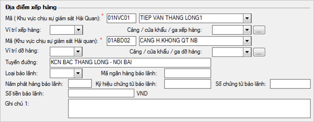
Mã (Khu vực chịu sự giám sát hải quan): Nhập vào mã địa điểm lưu kho hàng chịu sự giám sát của Hải quan nơi đăng ký tờ khai vận chuyển (nơi xếp hàng).
Vị trí xếp hàng: Trường hợp người khai đã nhập vào ô Mã (Khu vực chịu sự giám sát của Hải quan) thì không phải nhập vào ô này.
Mã (Khu vực chịu sự giám sát Hải quan): Nhập vào mã địa điểm lưu hàng chịu sự giám sát của Hải Quan nơi vận chuyển đến (nơi dỡ hàng).
Vị trí dỡ hàng: Trường hợp người khai đã nhập vào ô Mã (Khu vực chịu sự giám sát của Hải quan) dỡ hàng thì không phải nhập vào ô này.
Loại bảo lãnh: Nếu tại ô "Loại hình vận tải" bạn chọn là 'QU, EA, CT' thì phải nhập vào thông tin cho loại hình bảo lãnh.
- Thông tin vận đơn:
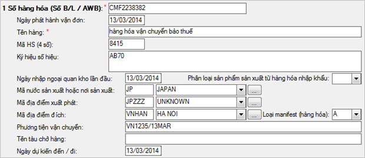
Số vận đơn và ngày phát hành: Nhập vào số vận đơn đối với trường hợp vận chuyển đường biển, sắt hoặc hàng không, trong trường hợp vận chuyển hàng hóa nội địa giữa các nhà máy bảo thuế, người khai nhập vào theo định dạng:
AAAAAAAAAAAAA,BBBBBBBBBBBB. Trong đó AAAAAAAAAAAAA là: mã số thuế của người khai hải quan tối đa 13 ký tự, BBBBBBBBBBBB là: số ký hiệu hóa đơn độ dài tối đa 12 ký tự.
Phương tiện vận chuyển: Nhập vào tên phương tiện vận chuyển theo Loại manifest hàng hóa đã chọn, ví dụ tại ô "Loại manifest (hàng hóa) bạn chọn là "A – vận đơn đường biển" thì tại ô Phương tiện vận chuyển bạn nhập vào tên tàu bay theo định dạng như sau: 02 ký tự đầu là mã hãng hàng không + 04 ký tự tiếp theo là số hiệu chuyến bay + "/" + 02 ký tự là ngày + 03 ký tự là tháng theo tiếng anh , ví dụ VN1238/13MAR.
- Nhập thông tin người nhập khẩu / xuất khẩu:
Nhập vào thông tin người nhập khẩu, xuất khẩu và ủy thác nếu có, đây là các thông tin không bắt buộc người phải nhập.
Mã người nhập khẩu: bắt buộc nhập đối với tờ khai vận chuyển nhập khi người khai chọn "Loại hình vận tải" là các loại hình trừ KS.
Mã người xuất khẩu: bắt buộc nhập đối với tờ khai vận chuyển xuất khi người khai chọn "Loại hình vận tải" là các loại hình trừ KS.
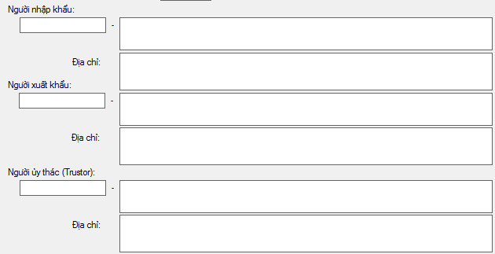
- Nhập thông tin hàng hóa:
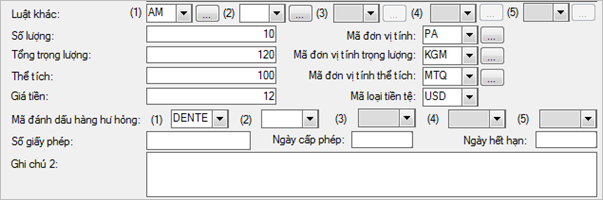
Luật khác: Nhập vào mã ký hiệu vản bản pháp luật quy định về hàng hóa đang đăng ký tờ khai vận chuyển. Ví dụ hàng hóa liên quan đên chất nổ công nghiệp bạn chọn mã Luật khác là 'AM'.
Mã đánh dấu hàng hóa hư hỏng: Nhập vào mã đánh dấu hàng hóa dễ hư hỏng, dễ vỡ nếu có, ví dụ hàng hóa có vết lõm thì bạn nhập vào mã là 'DENTE – hàng hóa có vết lõm'.
- Nhập danh sách tờ khai đăng ký vận chuyển hàng hóa:
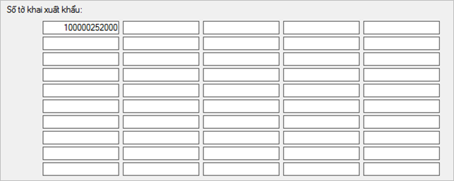
Tại đây người khai nhập vào danh sách các tờ khai nhập, xuất (nếu có) vận chuyển hàng hóa trên tờ khai vận chuyển này, bạn có thể nhập tối đa vào 50 số tờ khai.
- Tại tab Thông tin container:
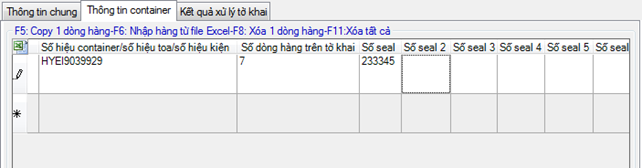
Người khai nhập vào danh sách Container vận chuyển hàng hóa đi kèm nếu có, tối đa mỗi tờ khai vận chuyển được đăng ký là 100 số Container bao gồm các thông tin:
Số hiệu container: nhập vào số hiệu container nếu vận chuyển bằng container, nhập vào số toa tàu nếu hàng hóa vận chuyển bằng đường sắt, nhập vào số kiện nếu hàng hóa vận chuyển bằng đường hàng không. Trường hợp không có danh sách container, người khai nhập vào tên phương tiện vận chuyển của lô hàng.
Số dòng hàng trên tờ khai: Nhập vào số lượng dòng hàng trên tờ khai.
Số seal: Nhập vào số niêm phong, kẹp chì của hàng hóa vận chuyển, người khai được nhập vào tối đa 6 số seal, mỗi số tối đa 15 kí tự không dấu.
Sau khi nhập xong thông tin cho tờ khai vận chuyển, người khai tiến hành khai báo lên cơ quan hải quan theo các bước hướng dẫn sau đây;
Phần 2: Khai báo tờ khai vận chuyển OLA
Bước 1: Đăng ký thông tin tờ khai OLA
Người khai chọn nút nghiệp vụ "2. Đăng ký thông tin tờ khai OLA", chương trình yêu cầu xác nhận chữ ký số khai báo, bạn chọn chữ ký số trong danh sách:
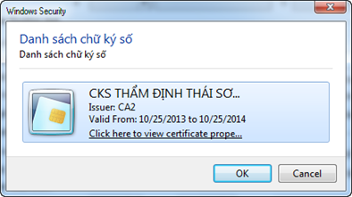
Và nhập vào mã PIN của Chữ ký số:
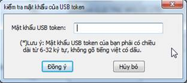
Thành công hệ thống trả về số tờ khai
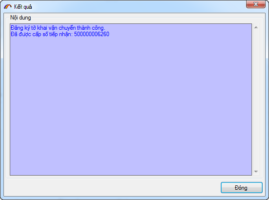
Sau khi kiểm tra các thông tin trả về, người khai có 2 phương án lựa chọn tiếp theo:
Thứ nhất: nếu các thông tin do hệ thống trả về doanh nghiệp thấy có thiếu sót cần bổ sung sửa đổi thì sử dụng mã nghiệp vụ OLB để gọi lại thông tin khai báo của tờ khai và sửa đổi sau đó tiếp OLA lại đến khi thông tin đã chính xác.
Thứ hai: nếu các thông tin do hệ thống trả về đã chính xác, doanh nghiệp chọn mã nghiệp vụ "3.Khai báo thông tin tờ khai OLC" để đăng ký chính thức tờ khai này với cơ quan hải quan.
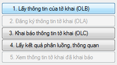
- Bước 2: Khai báo thông tin tờ khai OLC.
Sau khi đăng ký thông tin tờ khai OLA, người khai kiểm tra thông tin xác nhận và khai báo thông tin tờ khai vận chuyển lên cơ Quan Hải quan bằng cach nhấn nào nút nghiệp vụ "3.Khai báo thông tin tờ khai (OLC)".
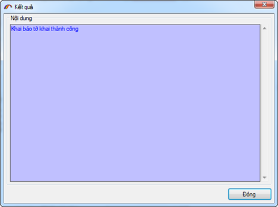
Khai báo thành công tờ khai vận chuyển sẽ được hệ thống tự động tiếp nhận, kiểm tra và phần luồng. Tờ khai vận chuyển có 2 luồng là luồng Xanh và luồng Vàng, trường hợp là luồng Xanh hệ thống tự động trả về thông báo chấp nhận khai vận chuyển, trường hợp luồng Vàng sẽ phải chờ cán bộ xử lý và trả về yêu cầu kiểm tra nếu có.
Người khai tiếp tục nhấn vào nút nghiệp vụ "4.Lấy kết quả phân luồng, thông quan" để nhận được các thông báo từ cơ quan Hải quan.
- Bước 3: Các chứng từ cần thiết và tiến hành vận chuyển
Khi tờ khai vận chuyển được chấp nhận, người khai tiến hành in thông báo phê duyệt vận chuyển bằng cách vào tab "Kết quả xủa lý tờ khai" để in:
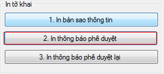
Đối với tờ khai luồng xanh, Công chức được giao nhiệm vụ xác nhận thông quan tờ khai vận chuyển tiến hành in Thông tin phê duyệt khai báo vận chuyển được tự động gửi về Hệ thống Hải quan (mã VAS5050); đóng dấu xác nhận theo mẫu, ký tên, đóng dấu công chức vào góc trên cùng bên phải của trang đầu tiên Thông tin phê duyệt khai báo vận chuyển in giao cho người khai hải quan tiến hành vận chuyển hàng hóa.
Đối với tờ khai là luồng vàng người khai xuất trình các hồ sơ chứng từ như sau khi tiến hành vận chuyển hàng hóa (nếu có yêu cầu xuất trình hồ sơ):
- Hóa đơn thương mại: 01 bản chụp;
- Vận tải đơn, trừ trường hợp hàng hóa vận chuyển qua biên giới đất liền, hàng hóa vận chuyển từ khu phi thuế quan: 01 bản chụp;
- Giấy phép vận chuyển chịu sự giám sát hải quan (nếu có);
- Các chứng từ khác theo quy định của pháp luật có liên quan.
Sau khi hoàn thành kiểm tra, Nếu kết quả kiểm tra phù hợp, công chức phê duyệt thông quan, tiến hành in Thông tin phê duyệt khai báo vận chuyển được tự động gửi về Hệ thống Hải quan (mã VAS5050); đóng dấu xác nhận theo mẫu, ký tên, đóng dấu công chức vào góc trên cùng bên phải của trang đầu tiên Thông tin phê duyệt khai báo vận chuyển in giao cho người khai hải quan tiến hành vận chuyển hàng hóa.
- Bước 4: Sửa, Hủy thông tin đăng ký vận chuyển
Trường hợp người khai cần sửa đổi, Hủy bỏ thông tin khai báo vận chuyển, sử dụng nút nghiệp vụ "5. Gọi thông tin tờ khai để sửa (COT11)" , tiến hành sửa đổi thông tin và khai báo bằng nghiệp vụ "5.1. Khai báo sửa thông tin tờ khai (COT)", tiếp tục lấy phản hồi để nhận được kết quả thông báo cho bản sửa.
Giao diện màn hình sau khi gọi thông tin tờ khai bằng nghiệp vụ COT11 hiện ra như sau:
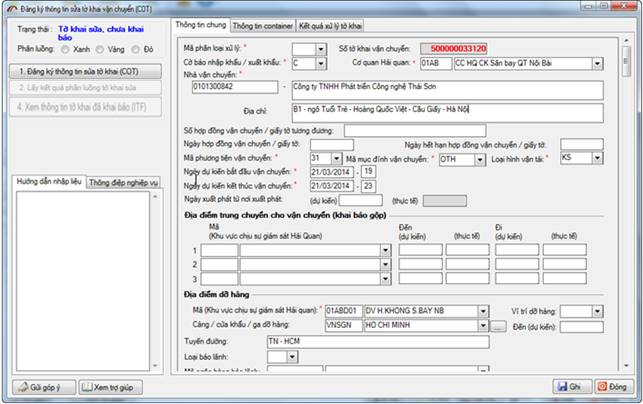
Quá trình nhập liệu, lựa chọn thông trên bản sửa, hủy cần lưu ý một số vấn để sau:
Mã phân loại xử lý: Nếu là sửa thông tin đăng ký của tờ khai vận chuyển bạn chọn mã phân loại là 5, nếu Hủy thông tin đăng ký bạn chọn là 1.
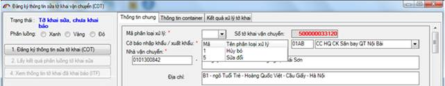
Mã phân loại xử lý ô "Số hàng hóa (số B/L/AWB):
- Nếu là số vận đơn được thêm mới, bạn nhập vào ô này giá trị là: 2
- Nếu là số vận đơn sửa đổi thông tin hoặc không được sửa bạn nhập là: 5
- Nếu là Hủy số vận đơn này thì bạn nhập vào là 3.
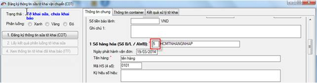
Tiến hành sửa đổi các thông tin cần thiết sau đó ghi lại và chọn nút nghiệp vụ " Đăng ký thông tin sửa tờ khai (COT)" để khai báo
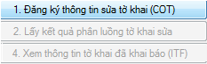
Hệ thống trả về số tờ khai sửa sau khi người khai khai báo thành công
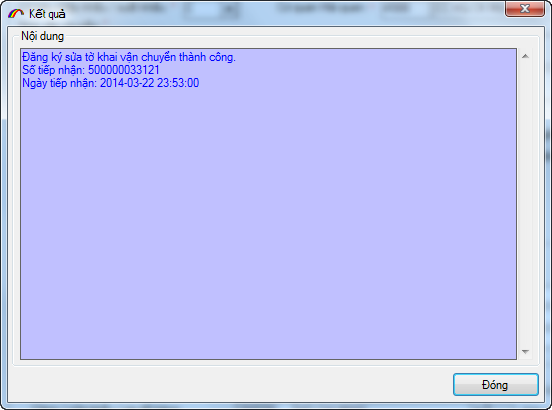
Người khai tiếp tục lấy phản hồi để nhận thông báo chấp nhận sửa tờ khai vận chuyển.
Bản quyền © thuộc về Công ty TNHH Phát triển công nghệ Thái Sơn